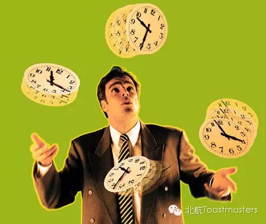
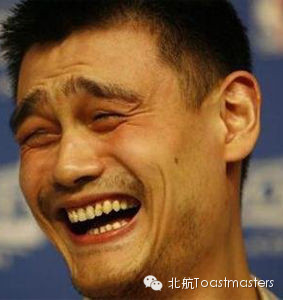

Joint meeting with Lenovo Northstar Toastmasters Club
Time: Friday April.25 19:30-21:30
Venue: Room A212, New Main Building, Beihang University

Toastmaster: Peter
Table Topic Master: Dave
Table Topic Evaluator: Dale
General Evaluator: Jason
If you look at the people around you, you'll find that most of them are quite busy. However, if you look into there lives, you'll notice that some of them have achieved a lot, while the others are in a mass. Some have a lot of leisure activities, the others are totally trapped by their jobs. Why is that? A possible answer is that some of us are more skillful at managing times. We've all got 24 hours every day, but most of us simply can't make full use of them. All you the master of time? Do you have any suggestions on time management? This time, we`ll talk about the different ways we use time in our daily life！
Prepared Speeches 2 Speakers

Can We Always Be Positive?
CC4: Rena
Evaluator: Deron
Stay Positive
CC4: Keven
Evaluator: Tony
What a suprise! Both of our speekers will talk about the attitude towards life this time! It seems that Rena is asking "Can we always be positive", while Keven`s answer is "Stay positive". Beyond this coincidence is the fact that our attitude has somehow decided the quality of our lives. Let`s look forward to their stories!
====分=====割=====线====
老朋友：点击右上角按钮分享到朋友圈
新朋友：点击标题下方的【北航Toastmasters】关注我们查看历史消息
向还不了解“北航Toastmasters"的朋友们介绍一下：这个组织专注于提升演讲能力和领导能力。每周五19:30在北航新主楼A212举办meeting.
我们欢迎每一个感兴趣的朋友前来做客!
路线：回复r即可查看路线地图